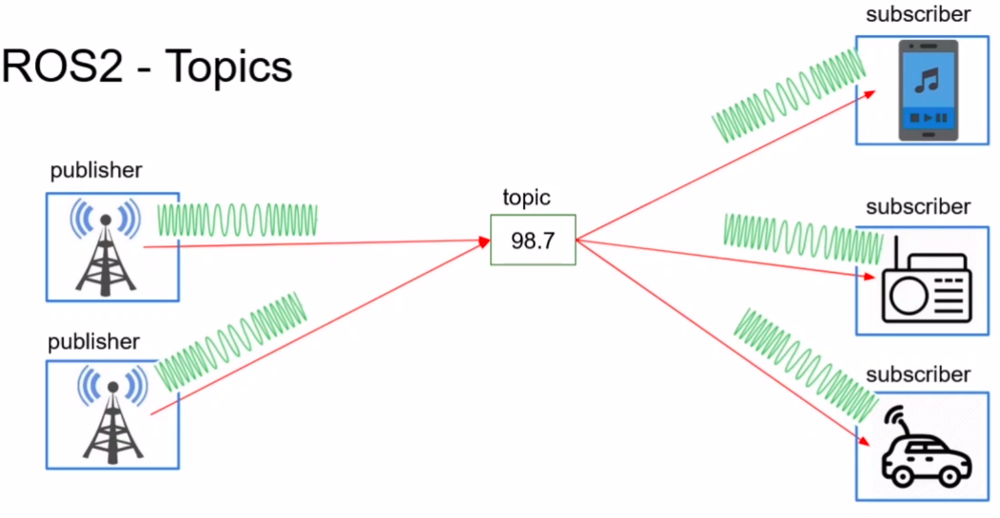
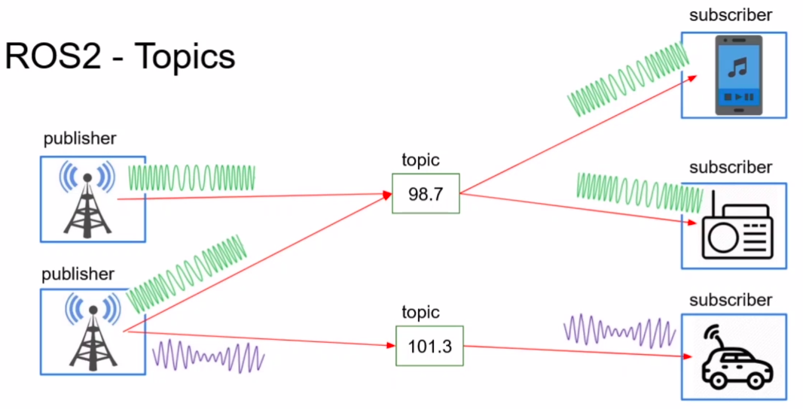
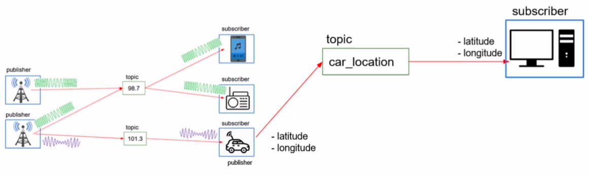
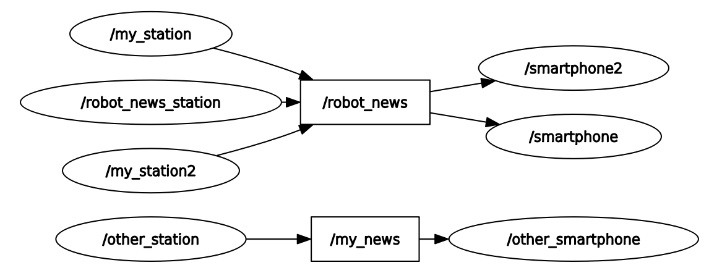
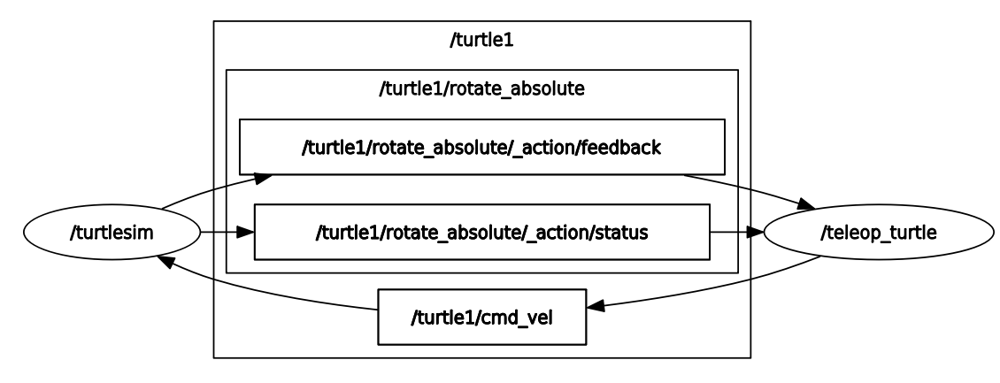
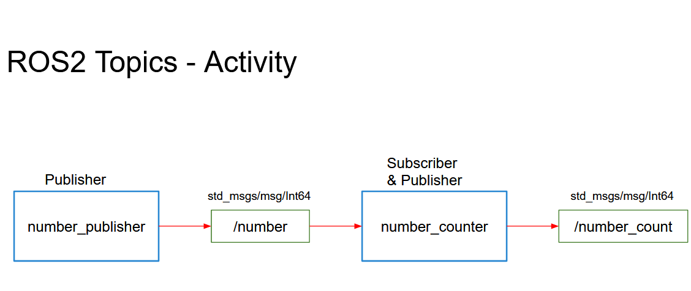

ros2 topic list / echo / info / hz / pub and ros2 interface show.rqt_graph.create_publisher(Type, "name", 10)create_subscription(…, callback, 10)ros2 topic list / echo / info / hz--ros-args -r old:=new| Time | Activity | Type |
|---|---|---|
| 0:00–0:10 | Warm-up + check Activity 2.1 from homework | Check |
| 0:10–0:30 | Radio station analogy, the 4 properties of a topic, message types | Teach |
| 0:30–0:55 | Lab 1 — move the turtle with ros2 topic pub | Do |
| 0:55–1:35 | Labs 2 & 3 — robot_news_station + smartphone | Do |
| 1:35–1:45 | Break | |
| 1:45–2:10 | Lab 4 — hz, bw, pub, remap, 3 stations in rqt_graph | Do |
| 2:10–2:50 | Activity 3.1 — number_publisher + number_counter (pairs) | Do |
| 2:50–3:00 | Exit ticket + homework | Check |
Teaching tip. Before Lab 2, ask two students to stand up: one "publishes" by reading numbers aloud, the other "subscribes" by writing them down. Then a third student also subscribes. That shows that topics are one-way and that many subscribers can listen to one publisher.
What are the five steps of every rclpy program?
After adding a new line in console_scripts, what must you do?
colcon build and then source ~/.bashrc.In rqt_graph last week, what was the arrow between /teleop_turtle and /turtlesim?
/turtle1/cmd_vel. Today we learn exactly what that is.A topic is like a radio station. The station (the publisher) broadcasts on a frequency (the topic name). Any radio (a subscriber) tuned to that frequency hears it. The station does not know who is listening, and a listener does not know who is broadcasting. They only agree on the frequency and the language (the message type).
example_interfaces/msg/String or geometry_msgs/msg/Twist. Both sides must use the same type.When to use a topic: for continuous streams of data such as sensor readings, robot position and velocity commands. (For "do this and tell me the result", we use services, next lecture.)



geometry_msgs/msg/Twist.linear.x = forward m/s, angular.z = turn rad/s.ros2 topic hz measures how often a topic publishes.Goal: find the topic that moves the turtle, read its message type, and publish on it yourself.
ros2 run turtlesim turtlesim_noderos2 run turtlesim turtle_teleop_keyros2 topic list
ros2 node info /turtlesim/parameter_events /rosout /turtle1/cmd_vel /turtle1/color_sensor /turtle1/pose
ros2 topic echo /turtle1/cmd_velNow press arrow keys in Terminal 2. Every key press is one message:
linear: x: 2.0 y: 0.0 z: 0.0 angular: x: 0.0 y: 0.0 z: 0.0 ---
ros2 topic info /turtle1/cmd_vel
ros2 interface show geometry_msgs/msg/TwistType: geometry_msgs/msg/Twist Publisher count: 1 Subscription count: 1 Vector3 linear float64 x float64 y float64 z Vector3 angular float64 x float64 y float64 z
linear.x = forward speed (m/s) and angular.z = turning speed (rad/s). The real LIMO robot is driven with exactly this message on a topic called /cmd_vel (Lecture 8).
ros2 topic pub -r 1 /turtle1/cmd_vel geometry_msgs/msg/Twist "{linear: {x: 2.0}, angular: {z: 1.8}}"-r 1 means "publish once per second". The turtle drives in a circle. Change the numbers and try again. Can you make it spin on the spot?
ros2 topic echo /turtle1/pose
ros2 topic hz /turtle1/poseecho shows x, y and theta changing. hz shows that turtlesim publishes the pose about 62 times per second. Stop everything with Ctrl+C.
Goal: a node that publishes a text message on /robot_news twice per second.
ros2 interface show example_interfaces/msg/Stringstring data
So a String message has one field, data.
package.xmlWe use a message from the example_interfaces package, so we must say so. Add the highlighted line under the rclpy one:
<depend>rclpy</depend>
<depend>example_interfaces</depend>cd ~/ros2_ws/src/my_py_pkg/my_py_pkg
touch robot_news_station.py
chmod +x robot_news_station.py#!/usr/bin/env python3
import rclpy
from rclpy.node import Node
from example_interfaces.msg import String
class RobotNewsStationNode(Node):
def __init__(self):
super().__init__("robot_news_station")
self.robot_name_ = "LIMO"
self.publisher_ = self.create_publisher(String, "robot_news", 10)
self.timer_ = self.create_timer(0.5, self.publish_news)
self.get_logger().info("Robot News Station has been started")
def publish_news(self):
msg = String()
msg.data = "Hi, this is " + self.robot_name_ + " from the robot news station."
self.publisher_.publish(msg)
def main(args=None):
rclpy.init(args=args)
node = RobotNewsStationNode()
rclpy.spin(node)
rclpy.shutdown()
if __name__ == "__main__":
main()The highlighted lines are the only new ideas: create a publisher once, then make a message, fill it, publish it each time the timer fires.
"robot_news_station = my_py_pkg.robot_news_station:main",cd ~/ros2_ws
colcon build --packages-select my_py_pkg --symlink-install
source ~/.bashrc
ros2 run my_py_pkg robot_news_stationros2 topic list
ros2 topic echo /robot_newsdata: Hi, this is LIMO from the robot news station. --- data: Hi, this is LIMO from the robot news station. ---
create_publisher(String, "robot_news", 10) explained| Argument | Meaning |
|---|---|
| String | The message type. It must match what subscribers expect. |
| "robot_news" | The topic name. It becomes /robot_news. |
| 10 | Queue size: keep up to 10 messages if the network is slow. 10 is a good default. |
Goal: a second node that receives every news message and prints it.
cd ~/ros2_ws/src/my_py_pkg/my_py_pkg
touch smartphone.py
chmod +x smartphone.py#!/usr/bin/env python3
import rclpy
from rclpy.node import Node
from example_interfaces.msg import String
class SmartphoneNode(Node):
def __init__(self):
super().__init__("smartphone")
self.subscriber_ = self.create_subscription(
String, "robot_news", self.callback_robot_news, 10)
self.get_logger().info("Smartphone has been started")
def callback_robot_news(self, msg):
self.get_logger().info(msg.data)
def main(args=None):
rclpy.init(args=args)
node = SmartphoneNode()
rclpy.spin(node)
rclpy.shutdown()
if __name__ == "__main__":
main()The subscriber gives ROS 2 a callback. Each time a message arrives, ROS 2 calls callback_robot_news(msg) with it. You never call it yourself.
"smartphone = my_py_pkg.smartphone:main",cd ~/ros2_ws && colcon build --packages-select my_py_pkg --symlink-install && source ~/.bashrc
ros2 run my_py_pkg robot_news_stationros2 run my_py_pkg smartphone[INFO] [...] [smartphone]: Smartphone has been started [INFO] [...] [smartphone]: Hi, this is LIMO from the robot news station. [INFO] [...] [smartphone]: Hi, this is LIMO from the robot news station.
Test the "anonymous" property: stop the station and start it again. The smartphone never crashes; it just waits and then receives again.
#include "rclcpp/rclcpp.hpp"
#include "example_interfaces/msg/string.hpp"
class RobotNewsStationNode : public rclcpp::Node
{
public:
RobotNewsStationNode() : Node("robot_news_station"), robot_name_("LIMO")
{
publisher_ = this->create_publisher<example_interfaces::msg::String>("robot_news", 10);
timer_ = this->create_wall_timer(std::chrono::milliseconds(500),
std::bind(&RobotNewsStationNode::publishNews, this));
RCLCPP_INFO(this->get_logger(), "Robot News Station has been started.");
}
private:
void publishNews()
{
auto msg = example_interfaces::msg::String();
msg.data = std::string("Hi, this is ") + robot_name_ + " from the Robot News Station";
publisher_->publish(msg);
}
std::string robot_name_;
rclcpp::Publisher<example_interfaces::msg::String>::SharedPtr publisher_;
rclcpp::TimerBase::SharedPtr timer_;
};
int main(int argc, char **argv)
{
rclcpp::init(argc, argv);
rclcpp::spin(std::make_shared<RobotNewsStationNode>());
rclcpp::shutdown();
return 0;
}find_package(example_interfaces REQUIRED)
add_executable(robot_news_station src/robot_news_station.cpp)
ament_target_dependencies(robot_news_station rclcpp example_interfaces)
install(TARGETS robot_news_station DESTINATION lib/${PROJECT_NAME})Run it with the Python smartphone: C++ and Python nodes talk on the same topic without any problem.
Goal: measure a topic, inject messages from the terminal, and rename topics without changing code.
ros2 run my_py_pkg robot_news_stationros2 topic info /robot_news
ros2 topic hz /robot_news
ros2 topic bw /robot_newshz should show about 2.0 (the timer is 0.5 s). bw shows the bandwidth in bytes per second. Change the timer to 0.1, run again, and check that hz shows about 10.
Keep the smartphone running in one terminal and publish from another:
ros2 topic pub -r 2 /robot_news example_interfaces/msg/String "{data: 'hello from the terminal'}"The smartphone prints your text too. This is how you test a subscriber before its publisher exists.
ros2 run my_py_pkg robot_news_station --ros-args -r __node:=my_station -r robot_news:=my_newsros2 topic list
ros2 run my_py_pkg smartphone --ros-args -r robot_news:=my_news-r is short for --remap. Publisher and subscriber must use the same name, or they won't hear each other.
Open a terminal for each line, then look at the graph:
ros2 run my_py_pkg robot_news_station --ros-args -r __node:=station1
ros2 run my_py_pkg robot_news_station --ros-args -r __node:=station2
ros2 run my_py_pkg smartphone
ros2 run my_py_pkg robot_news_station --ros-args -r __node:=station3 -r robot_news:=other_news
ros2 run my_py_pkg smartphone --ros-args -r __node:=smartphone2 -r robot_news:=other_news
rqt_graphYou should see two separate groups, just like Book Fig. 2.4. Explain to your neighbour why smartphone2 only hears station3.



2) on /number every 0.5 s. Type: example_interfaces/msg/Int64./number. It keeps a counter. Each time a number arrives, it adds it to the counter and immediately publishes the new total on /number_count.Test: ros2 topic echo /number_count should show 2, 4, 6, 8…
ros2 interface show example_interfaces/msg/Int64 → one field, int64 data.#!/usr/bin/env python3
import rclpy
from rclpy.node import Node
from example_interfaces.msg import Int64
class NumberPublisherNode(Node):
def __init__(self):
super().__init__("number_publisher")
self.number_ = 2
self.number_publisher_ = self.create_publisher(Int64, "number", 10)
self.number_timer_ = self.create_timer(0.5, self.publish_number)
self.get_logger().info("Number publisher has been started")
def publish_number(self):
msg = Int64()
msg.data = self.number_
self.number_publisher_.publish(msg)
def main(args=None):
rclpy.init(args=args)
node = NumberPublisherNode()
rclpy.spin(node)
rclpy.shutdown()
if __name__ == "__main__":
main()#!/usr/bin/env python3
import rclpy
from rclpy.node import Node
from example_interfaces.msg import Int64
class NumberCounterNode(Node):
def __init__(self):
super().__init__("number_counter")
self.counter_ = 0
self.number_count_publisher_ = self.create_publisher(Int64, "number_count", 10)
self.number_subscriber_ = self.create_subscription(
Int64, "number", self.callback_number, 10)
self.get_logger().info("Number Counter has been started")
def callback_number(self, msg):
self.counter_ += msg.data
new_msg = Int64()
new_msg.data = self.counter_
self.number_count_publisher_.publish(new_msg)
def main(args=None):
rclpy.init(args=args)
node = NumberCounterNode()
rclpy.spin(node)
rclpy.shutdown()
if __name__ == "__main__":
main()# "number_publisher = my_py_pkg.number_publisher:main",
# "number_counter = my_py_pkg.number_counter:main",
cd ~/ros2_ws && colcon build --packages-select my_py_pkg --symlink-install && source ~/.bashrc
ros2 run my_py_pkg number_publisher # terminal 1
ros2 run my_py_pkg number_counter # terminal 2
ros2 topic echo /number_count # terminal 3Keep these two nodes. We add a service to the counter in Lecture 4, and start both with a launch file in Lecture 6.
Write turtle_spiral.py: a node that publishes a geometry_msgs/msg/Twist on /turtle1/cmd_vel at 10 Hz. Keep angular.z = 2.0 and make linear.x grow slowly (for example +0.02 each time), so the turtle draws a spiral. Add <depend>geometry_msgs</depend> to package.xml.
#!/usr/bin/env python3
import rclpy
from rclpy.node import Node
from geometry_msgs.msg import Twist
class TurtleSpiral(Node):
def __init__(self):
super().__init__("turtle_spiral")
self.speed_ = 0.5
self.cmd_pub_ = self.create_publisher(Twist, "turtle1/cmd_vel", 10)
self.create_timer(0.1, self.loop)
def loop(self):
msg = Twist()
msg.linear.x = self.speed_
msg.angular.z = 2.0
self.cmd_pub_.publish(msg)
self.speed_ += 0.02
def main(args=None):
rclpy.init(args=args)
rclpy.spin(TurtleSpiral())
rclpy.shutdown()
if __name__ == "__main__":
main()ros2 topic echo /number_count./turtle1/pose and publishes a warning String when the turtle is near a wall (x or y < 1 or > 10).A topic is…
Your subscriber prints nothing. What do you check first?
ros2 topic info shows both sides.Which field makes a wheeled robot turn?
angular.z is rotation about the vertical axis (rad/s). Positive means turn left.Who calls callback_robot_news(msg)?
spin is needed.The station publishes on /robot_news, the phone is remapped to /my_news. What happens?
| You see… | Why | Fix |
|---|---|---|
| Subscriber prints nothing | The topic names differ (a typo, or you remapped only one side). | ros2 topic list and ros2 topic info /name: publisher count and subscription count should both be ≥ 1. |
| ModuleNotFoundError: example_interfaces | Missing dependency. | Add <depend>example_interfaces</depend>, rebuild. |
| AttributeError: 'String' has no attribute 'text' | Wrong field name. | ros2 interface show … shows the real field names (data). |
| ros2 topic pub: "Failed to populate field" | YAML typo in the message. | Use "{data: 'text'}": a space after the colon, and the whole thing in double quotes. |
| Types don't match (rqt_graph shows no arrow) | Publisher uses std_msgs/String, subscriber example_interfaces/String. | Both sides must import the same type. |
Name the 4 properties of a topic.
Which two fields of a Twist do we use to drive a wheeled robot?
linear.x (forward m/s) and angular.z (turn rad/s).Which command shows how often a topic publishes?
ros2 topic hz /topic_nameWho calls callback_robot_news(msg)?
rclpy.spin), every time a message arrives. You never call it yourself.Is a topic a good choice for "compute 3 + 4 and give me the answer"? Why?
ros2 topic listall topicsros2 topic echo /tprint messagesros2 topic info /ttype + number of pubs/subsros2 topic hz /t · bw /trate · bandwidthros2 topic pub -r 2 /t TYPE "{...}"publish from the terminalros2 interface show TYPEfields of a message--ros-args -r old:=newremap a topiccreate_publisher(T, "name", 10) · create_subscription(T, "name", cb, 10)in Python